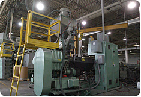
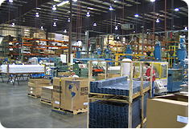
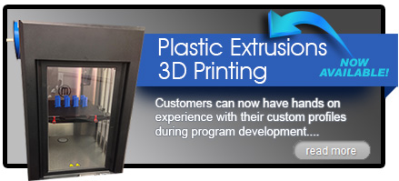

With locations in Michigan and Kentucky, Preferred Plastics has the ability to handle any sized project! We are continually expanding and always innovating to make sure we can offer the most cost-effective and on-time deliveries available in our industry. Our goal is to keep you comin back.
In our 160,000 square foot Michiagan facility, we operate 30 extruders ranging from 1-inch to 4.5-inches in barrel diameter, which allows us to produce a wide variety of profile sizes. We also maintain our own material compounding facility and physical testing laboratory to ensure our customers consistency in product quality.
Our Kentucky plant operates 8 extruders with barrel diameters ranging from 1-inch to 4.5-inches in a state of the art40,000 square foot facility. Known for our expertise complex TPE profiles, Preferred Plastics - Kentucky Division has over 20 years experience in putting a wide range of materials into quality plastic extrusions.
